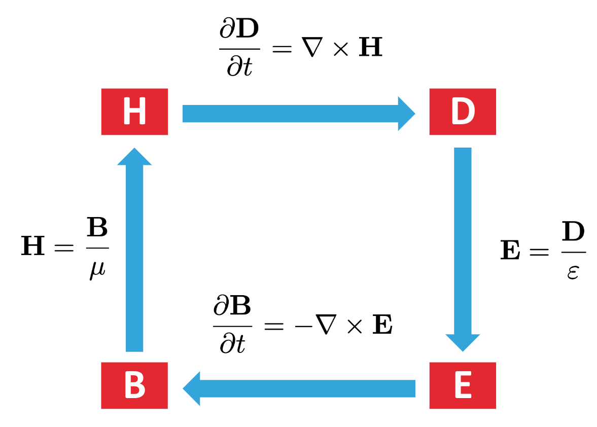

Yankun (Alex) Meng
Lecture Outline
Introduction to Tidy3D
FDTD method allows you to compute the evolution of electromagnetic field in the time domain.
Given some device \epsilon(\vec{r}) and an incident field or current source \vec{J}(\vec{r}, t), internally, FDTD solves these maxwell’s equations:
\nabla \times \vec{E}(\vec{r}, t) = -\mu_0 \frac{\vec{H}(\vec{r}, t)}{dt} \tag{1}
\nabla \times \vec{H}(\vec{r}, t) = \epsilon(\vec{r}) \epsilon_0 \frac{d\vec{E}(\vec{r}, t)}{dt} + \vec{J}(\vec{r}, t) \tag{2}
Field Update
The diagram is from Simulation Documentation
These software packages should be imported everytime you start a tidy3D project:
Before the simulation, we have to define some key parameters of the electromagnetic waves that we will use across the simulation:
lambda_range = (1.1, 1.6) # wavelength range (µm)
freqs = (td.C_0 / lambda_range[1], td.C_0 / lambda_range[0]) # frequency range
freq0 = np.mean(freqs) # center frequency
lda0 = td.C_0 / freq0 # center wavelength
bandwidth = 0.38 # normalized bandwidth
freqw = bandwidth * (freqs[1] - freqs[0]) # bandwidth in HzNote: All numbers in tidy3d are in microns (\mu m)
Here’s how to simulate something:
The most basic way of running the simulation is using the web object we imported from tidy3d:
# Running a simulation
sim1_data = web.run(simulation1, task_name='any-unique-name', path='data/descriptive-name.hdf5')Simulation data is stored as an HDF5 file at the file path you specify.
See Simulation Documentation for more information
The 7 required inputs are:
We will introduce these 7 parameters by simulating a huygen’s metasurface
See Simulation Documentation for more information
Size in x, y, and z directions.
Specifications for the simulation grid along each of the three directions.
# Define Grid size
spec = td.GridSpec.auto(min_steps_per_wvl=40, wavelength=lda0)
# Defining a simulation
simulation1 = td.Simulation(
# A square computational domain
size = (x, y, z),
grid_spec=spec,
)td.GridSpec contains many functions to help define the grid, the most commonly used are:
td.Structure is the meat of the simulation. It defines a physical object that interacts with the electromagnetic fields. The structures field is a tuple of Structure objects that you create.
A structure needs two inputs at least: - geometry (td.Box, td.Cylinder, td.Sphere, td.TriangleMesh (STL file), etc.) - medium Mediums define the optical properties of the materials within the simulation. (e.g. td.Medium)
According to the paper on huygen’s metasurface, I defined these four structures:
t = 2 # thickness of the substrate # THIS SHOULD BE CHANGED TO INFINITE
substrate = td.Structure(
geometry=td.Box(
center=(0,0,-t/2),
size=(td.inf,td.inf,t)
),
medium=td.Medium(permittivity=1.45**2, name='oxide'),
name='substrate'
)superstrate = td.Structure(
geometry=td.Box(
center=(0,0,t/2),
size=(td.inf,td.inf,t)
),
medium=td.Medium(permittivity=1.4**2, name='glass'),
name='superstrate'
)Tuple of electric current sources injecting fields into the simulation. Common ones are:
Plane Wave - Uniform current distribution on an infinite extent plane. (Doc)
pulse = GaussianPulse(freq0=200e12, fwidth=20e12)
pw_source = PlaneWave(size=(inf,0,inf), source_time=pulse, pol_angle=0.1, direction='+')Point Dipole - Uniform current source with a zero size. (Doc)
pulse = td.GaussianPulse(freq0=200e12, fwidth=20e12)
pt_dipole = td.PointDipole(center=(1,2,3), source_time=pulse, polarization='Ex')See documentation for Other Sources
In this case, I defined one plane wave source:
Tuple of monitors in the simulation. Note: monitor names are used to access data after simulation is run.
See Other monitors
Total electromagnetic evolution time in seconds.
Specification of boundary conditions along each dimension. If None, PML boundary conditions are applied on all sides.
Tuple of integers defining reflection symmetry across a plane bisecting the simulation domain normal to the x-, y-, and z-axis at the simulation center of each axis, respectively. Each element can be 0 (no symmetry), 1 (even, i.e. ‘PMC’ symmetry) or -1 (odd, i.e. ‘PEC’ symmetry). Note that the vectorial nature of the fields must be taken into account to correctly determine the symmetry value.
Symmetry can be used to greatly reduce the computational cost –>